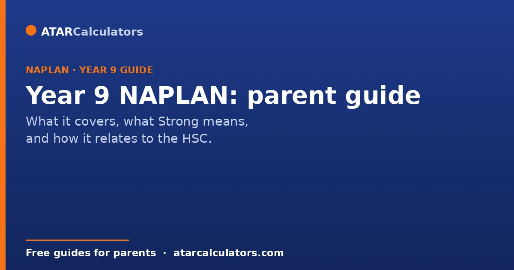
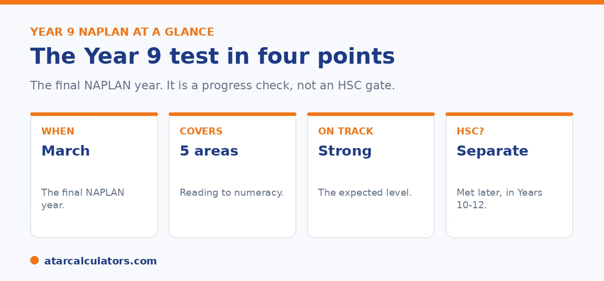

Here is the short version. Year 9 is the final NAPLAN year. Children sit it in March, across five areas. Reading, writing, spelling, grammar, and numeracy. Since 2023, results use four levels, and Strong is the expected level. Year 9 NAPLAN is a useful progress check. But it does not decide your child's ATAR. And it does not meet the NSW HSC minimum standard. That standard is met separately, through online tests in Years 10 to 12. This guide covers what matters and what does not.
Year 9 NAPLAN is the last one your child will sit. That makes some parents anxious, especially in NSW, where people often tie it to the HSC. The reality is calmer than the rumours.
Below is what Year 9 NAPLAN actually covers, what a good result looks like, and what it does and does not affect. To check a score, use our Year 9 NAPLAN calculator.
Key takeaways
- Year 9 is the final NAPLAN, sat in March across five areas.
- Since 2023, results use four levels. Strong is the expected level.
- Year 9 NAPLAN does not decide your child's ATAR.
- It does not meet the NSW HSC minimum standard either.
- The HSC minimum standard is met separately, in Years 10 to 12.
- It is a useful progress check, not a high-stakes exam.
What Year 9 NAPLAN is
Year 9 NAPLAN is the final NAPLAN test. Like the others, it checks five areas: reading, writing, spelling, grammar and punctuation, and numeracy. Children sit it in March, near the start of the year. At Year 9 the whole test is online, and it is adaptive, which means it adjusts as your child answers.

Since 2023, results use four levels: Exceeding, Strong, Developing, and Needs additional support. Strong is the level expected for Year 9. Results reach parents early in Term 3.
What counts as on track at Year 9
For Year 9, Strong is the expected level. A result of Strong means your child is at or just above the Year 9 standard. Exceeding means well above it. Developing means below the standard, with the basics in place, and Needs additional support means extra help would close the gap.
Because the bar rises each year, the score needed to reach Strong in Year 9 is much higher than in earlier years. To see an indicative result for a Year 9 score, use our Year 9 NAPLAN calculator, and read what counts as a strong Year 9 score for more.
Does Year 9 NAPLAN affect the HSC?
This is where most of the worry comes from in NSW, so let us be clear. Year 9 NAPLAN does not meet the HSC minimum standard. It used to, for one cohort years ago, but that pathway is gone.
Today, every NSW student meets the HSC minimum standard by sitting separate online tests in reading, writing, and numeracy, from Year 10 onwards. Students need to reach the set level in each, and they get several tries across Years 10, 11, and 12. So your child's Year 9 NAPLAN result does not tick the HSC box. A strong Year 9 result is a good early sign they have the skills, and that is all.
Worried about a Year 9 score? See where it sits first.
Open the Year 9 NAPLAN calculator →Does Year 9 NAPLAN predict the ATAR?
No. Year 9 NAPLAN does not feed into the ATAR, and it does not predict it. The ATAR comes from Year 12 results, which are years away. A lot changes between Year 9 and Year 12.
Children grow, subjects change, and effort in the senior years matters far more than a test in Year 9. There is a loose link, in that strong literacy and numeracy help with everything later. But a Year 9 result does not set a ceiling. For more, see our guide on whether Year 9 NAPLAN predicts your ATAR.
How to support your child
The best support is steady and low pressure. Keep reading part of daily life, talk about numbers in everyday situations, and treat the test as an ordinary check, not a big event. If one area is weaker, give it a little extra, calm attention.
You do not need to drill or cram. For practical, low-stress steps, see our guide on how to prepare for Year 9 NAPLAN without stress.
The reason a steady, low-pressure approach works better than cramming is worth understanding. Year 9 NAPLAN tests skills that build slowly, rather than content that can be memorised at the last minute. Reading, writing and numeracy grow through consistent everyday exposure. So the most effective support is woven into normal life rather than bolted on as exam preparation. Keeping reading a regular habit, of anything your teenager finds engaging, builds the comprehension and vocabulary the test rewards. Talking through everyday numbers, budgets, distances, comparisons, keeps numeracy alive in a practical context. Encouraging writing, even informally, develops the ability to organise and express ideas. Framing the test itself as an ordinary progress check rather than a high-stakes event keeps a teenager relaxed. That matters because anxiety narrows the very concentration and working memory the test draws on. So a calm student typically performs closer to their true ability. Where one area is clearly weaker, a little extra, unhurried attention helps, ideally guided by what the teacher suggests. This is because they know your child's strengths. What does not help is drilling practice papers under pressure or treating Year 9 NAPLAN as a make-or-break moment. It is neither. It is a checkpoint that shows where a student stands and where some support would pay off, well before the senior years that actually shape the ATAR. Support the underlying skills steadily, keep the test in proportion. And your child will do their honest best. That is all it is designed to measure.
When results come and how to read them
Results reach parents early in Term 3, usually around July, through the school. The report shows your child's level in each area, with a dot on a scale and the national average for Year 9.
For a full walk through of every part of the report, see our guide on how to read the NAPLAN report.
A note to keep things in perspective
Year 9 NAPLAN is one test on one day, in one part of your child's life. It does not decide their HSC, their ATAR, or their future. It is a snapshot of literacy and numeracy that can help you spot strengths and gaps.
Use it that way, support your child steadily, and keep the pressure low. That approach helps far more than treating Year 9 NAPLAN as high stakes.
What Year 9 NAPLAN tests
Year 9 NAPLAN tests four areas: Reading, Writing, Conventions of Language, which covers spelling, grammar and punctuation, and Numeracy. Together they give a picture of literacy and numeracy at the start of the senior years.
Most of the tests are online and adaptive, so the questions adjust to your child's answers. This measures ability more precisely than a fixed paper.
What each area looks like
Reading asks students to understand and interpret a range of texts. Writing asks for one piece to a set prompt, either persuasive or narrative. Conventions of Language checks spelling, grammar and punctuation.
Numeracy covers number, algebra, measurement, geometry, statistics and probability. So the tests span the core literacy and numeracy skills your child will lean on in Years 11 and 12.
Looking at growth, not just the score
The most useful thing you can do with a Year 9 result is compare it to earlier years. Because the scores sit on one scale, you can see whether your child has grown from Year 7 to Year 9.
Steady growth is a good sign, even if the level has not changed. A flat or falling result is a prompt to look at where support might help before the senior years.
Talking to your teenager about it
Teenagers can be sensitive about results. So keep the conversation low-pressure. Focus on effort and growth, not just the number, and avoid comparing them to siblings or friends.
If the result is strong, acknowledge the work behind it. If it is not what they hoped, treat it as useful information about where to focus, not a judgement on them.
When Year 9 NAPLAN happens
Since 2023, NAPLAN is held in March rather than May. Year 9 students sit it early in the year, and results come back faster than under the old timetable.
Most of the tests are online, and the writing task is completed in the same test window. So your child sits it near the start of Year 9, and you can expect results later in the year through the school.
What a strong Year 9 result reflects
A strong Year 9 result reflects solid literacy and numeracy at the start of the senior years. It does not open any specific door on its own, but it suggests your child has the core skills that senior subjects build on.
So treat it as reassurance that the foundations are in place. Where a result is weaker, it points to skills worth strengthening in Year 10, while there is still plenty of time.
Keeping Year 9 NAPLAN in proportion
It is easy to over-weight Year 9 NAPLAN, especially with senior school approaching. But it is one test, on set skills, at one moment. It does not measure your child's subjects, effort, or potential.
So use it for what it is good at: a national check on literacy and numeracy. Take any useful signal from it, act on gaps early, and otherwise keep it in proportion against the fuller picture of your child's learning.
The writing task at Year 9
The Year 9 writing task gives a single prompt, either persuasive or narrative, set for that year. Students plan and write one piece in the time allowed, and it is marked against criteria like ideas, structure, vocabulary, spelling and punctuation.
So a strong writing result comes from clear structure and a good range of vocabulary, not just correct spelling. Practising how to plan a piece quickly helps, since the time is limited.
Common questions
Does Year 9 NAPLAN matter?
It is a useful progress check of literacy and numeracy, and the last NAPLAN your child sits. It does not decide the HSC or the ATAR, so it is not a high-stakes exam.
When is Year 9 NAPLAN?
Children sit it in March. Since 2023, NAPLAN runs in March rather than May, so results can be returned earlier, around the start of Term 3.
What does Year 9 NAPLAN cover?
Five areas: reading, writing, spelling, grammar and punctuation, and numeracy. At Year 9 the whole test is online and adaptive.
Does Year 9 NAPLAN affect the HSC?
No. Year 9 NAPLAN does not meet the HSC minimum standard. That standard is met separately, by sitting online reading, writing and numeracy tests in Years 10 to 12.
Can my child meet the HSC minimum standard in Year 9?
No. Since HSC 2021, the standard is met only through separate online tests in Years 10 to 12. A strong Year 9 NAPLAN result is a good early sign, but it does not count toward it.
Does Year 9 NAPLAN predict the ATAR?
No. The ATAR comes from Year 12 results, which are years away. Year 9 NAPLAN does not feed into it or predict it.
What is a strong Year 9 NAPLAN score?
Strong is the expected level for Year 9, meaning your child is at or just above the Year 9 standard. Exceeding is above it. Use the Year 9 NAPLAN calculator for an indicative score.
How can I help my child do well?
Keep reading part of daily life, talk about numbers in everyday situations, and treat the test as an ordinary check. Steady, low-pressure support beats cramming.
See where a Year 9 score sits
Enter Year 9 reading and numeracy scores to see the indicative level. Free, and no signup.
Open the Year 9 NAPLAN calculator →Related guides
This guide is general information for parents, not formal advice. HSC and NAPLAN rules can change. So always confirm the current HSC minimum standard with NESA, and check NAPLAN details at the National Assessment Program site. Reviewed by the ATARCalculators Editorial Team.